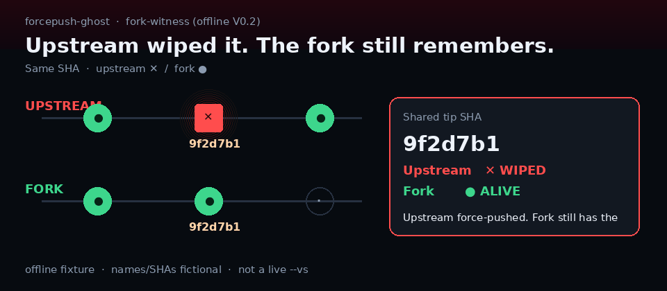

forcepush-ghost
● Green = still on the default branch. ✕ Red = wiped by a force-push.

10 seconds — how to play
mrdoob/three.js below, or any owner/repo — Events + compare; failures never fake a fixture.Fork still remembers (offline) — V0.2 preview
Upstream wiped it. The fork still remembers.
Same SHA: upstream ✕ / fork ●. Pick Fork-witness A below for the dual rail. Offline fixtures only — not a live upstream↔fork compare. Live --vs is CLI-only (clone then node bin/forcepush-ghost.js mrdoob/three.js --vs alteredq). Pages never runs live --vs / --vs auto. No restore.
Try showcase — real public repo
This page stays offline fixtures. For a live red ✕ on a real repo (verified on v0.1.6+):
git clone https://github.com/CAOShurong/forcepush-ghost.git cd forcepush-ghost node bin/forcepush-ghost.js mrdoob/three.js
Expect real ✕ WIPED rewrite signals (Events + compare). Alt: pocketbase/pocketbase (CLI-only fork-witness: --vs fondoger). Live fork-witness (CLI only): --vs alteredq on three.js — Pages never runs live --vs / --vs auto. Failures never substitute a fixture. Story/timeline only — not a scanner.
Upstream force-pushed. Fork still has the tip.
Upstream
Fork
Real-world shape (sanitized in fixtures)
Names/SHAs here are fictional. Not live scans of jenkinsci/* or CocoaPods/Specs. GitHub Activity can show a force-push before SHA — same shape as our ✕ rail; we do not replace Activity and we do not offer restore.
node bin/forcepush-ghost.js owner/repo (npx after npm publish).
● alive on branch ✕ wiped by force-push